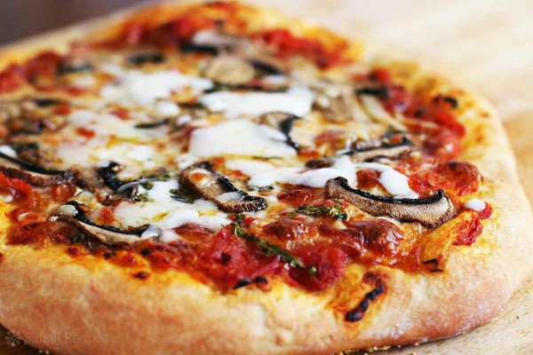

Pizza
Ingredients
Pizza Dough: Makes enough dough for two 10-12 inch pizzas
- 1 1/2 cups (355 ml) warm water (105°F-115°F)
- 1 package (2 1/4 teaspoons) of active dry yeast
- 3 3/4 cups (490 g) bread flour
- 2 tablespoons extra virgin olive oil (omit if cooking pizza in a wood-fired pizza oven)
- 2 teaspoons salt
- 1 teaspoon sugar
Pizza Ingredients
- Extra virgin olive oil
- Cornmeal (to help slide the pizza onto the pizza stone)
- Tomato sauce (smooth, or puréed)
- Firm mozzarella cheese, grated
- Fresh soft mozzarella cheese, separated into small clumps
- Fontina cheese, grated
- Parmesan cheese, grated
- Feta cheese, crumbled
- Bell peppers, stems and seeds removed, very thinly sliced
- Italian pepperoncini, thinly sliced
- Italian sausage, cooked ahead and crumbled
- Ham, thinly sliced
- Pepperoni, thinly sliced
Special equipment
- A pizza stone, highly recommended if you want crispy pizza crust
- A pizza peel or an edge-less cookie or baking sheet
- A pizza wheel for cutting the pizza, not required, but easier to deal with than a knife